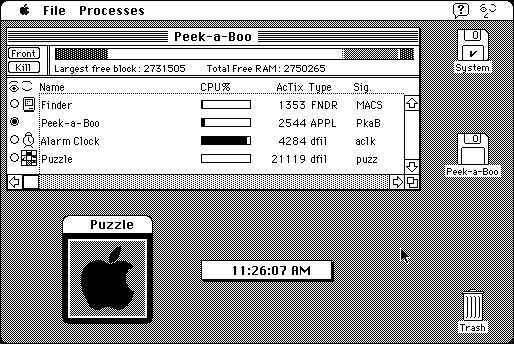

Download
peek-a-boo-11.zip (61K) Peek-a-Boo 1.1 repackaged into a zipped hfs disk image and checksum file. The disk image can be mounted with Mini vMac.
peek-a-boo-11.hqx (86K) Peek-a-Boo 1.1 in the original format.
copyright: Bob Clark
mod date: Feb 23, 1994
license: shareware
"Peek-a-Boo is a utility to monitor and manipulate all running processes." For System 7.
Its distant descendant, Peek-a-Boo for Mac OS X, is still available from the same author.

If you find these downloads useful, please consider helping the Gryphel Project, which hosts them.
Here are the md5 checksums for the downloads, signed with Gryphel Key 5:
--------- GRY SIGNED TEXT --------- 3ba9979cc3b3295a2b11bfdbf3a551e5 peek-a-boo-11.hqx 0d12753d73d503f3873a9a5dc24b4712 peek-a-boo-11.zip ------- BEGIN GRY SIGNATURE ------- Gry/4Xa8CFcUzxdN/BhlG1sZRV0+VNmkuSLmRzPJuRIZvhNKNXPMLAcnyoeqg8W7 qDvIagNC6J0cYLWfgAXe5m0YBWf3963TUjeoKzrcncq0xGEHHx/AGC7eqNVvO34Z uenCMxhZZl7QhK+hel2mLnePcfOgy4Y4brHn5AI2z1bjDggIFPIG6cSCKvQgMtoB -------- END GRY SIGNATURE --------